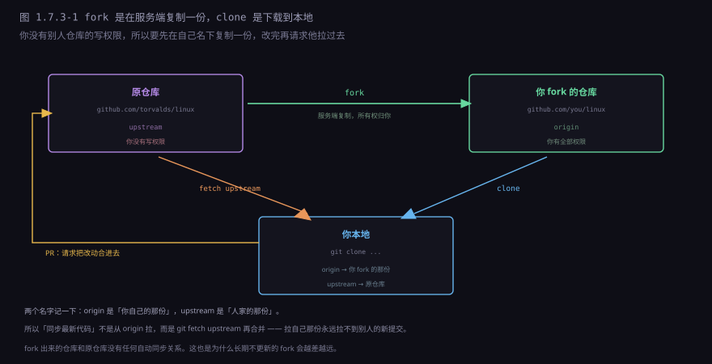
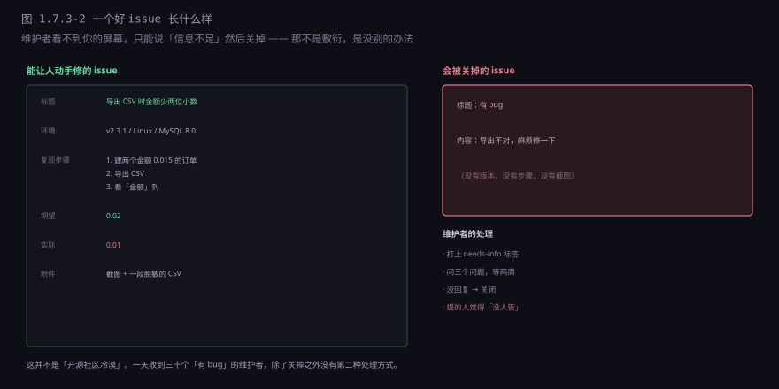
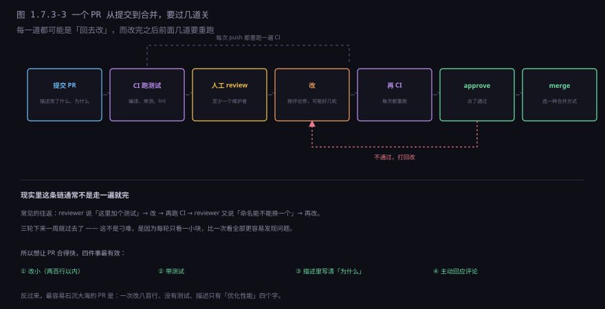
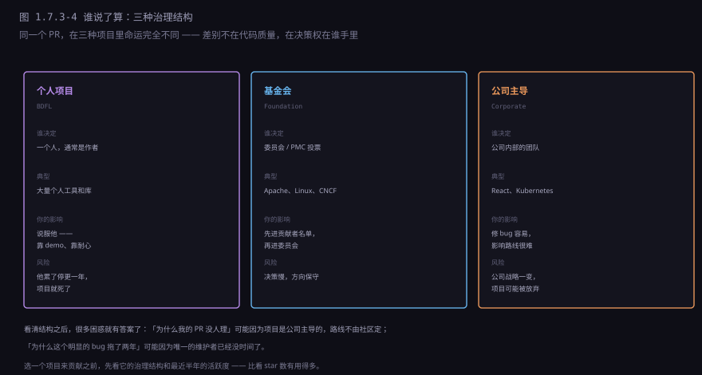
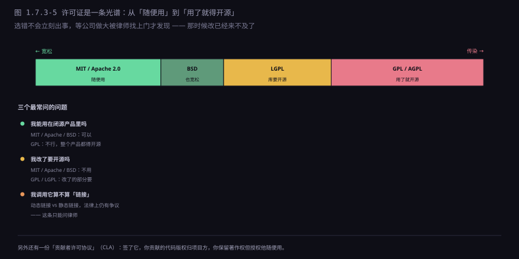
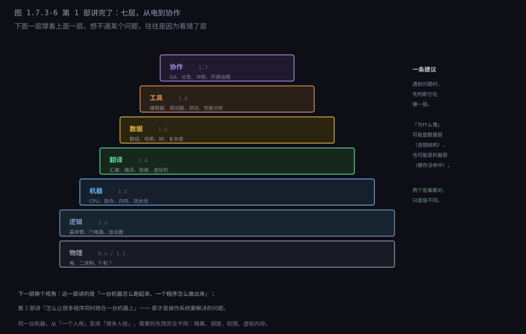

约 0.6 万字 · 6 张图 · 读完你能说清 fork 和 clone 差在哪、 一个 PR 要过几道关、许可证的传染性边界在哪， 以及为什么有些 PR 三个月没人理
这两个词长得像，作用完全不同，混淆了会浪费很多时间。

| clone | fork | |
|---|---|---|
| 发生在哪 | 你的机器上 | GitHub 的服务器上 |
| 结果 | 本地多一份工作副本 | 你名下多一个仓库 |
| 要权限吗 | 只要能读 | 只要能读（fork 不需要写权限） |
| 和原仓库的关系 | remote 指向它 | 只是记录了一个「上游」链接 |
| 用来干什么 | 干活 | 提交改动 |
典型的工作流是这样的：
# 1. 在网页上点 Fork（服务端复制一份到你名下）
# 2. 下载你自己的那份
git clone git@github.com:you/project.git
# 3. 把原仓库加为第二个 remote
git remote add upstream https://github.com/original/project.git
# 4. 干活前后同步上游
git fetch upstream
git rebase upstream/main
# 5. 推到你自己的 fork，然后在网页上发 PR
git push origin my-feature第 3 步是新手最容易漏的。不加上游，你 fork 的那份就永远停在 fork 那一刻， 越差越远，最后连 PR 都发不出去（因为冲突太多）。
Pull Request 这个名字起得很准：它的字面意思是「请你 pull 我的改动」。 它不是一次合并，是一个请求；不是 Git 的功能，是 GitHub 加的一层包装。
这层包装的价值在于：它把一个「分支」变成了一个可以讨论的东西。 一个 PR 页面里同时装着：
改动的 diff、讨论的每一轮、CI 的每一次结果、reviewer 的每一条评论、 以及最后 merge 时的选项。所有决策的上下文都在一个页面上—— 这是 GitHub 对开源协作最大的贡献，比 Git 本身更影响工作方式。
一个 PR 的生命周期大概是：
| 状态 | 含义 |
|---|---|
| Draft | 还在写，别急着看 |
| Open | 写完了，请 review |
| Changes requested | 有问题，回去改 |
| Approved | 可以合了 |
| Merged / Closed | 合了 / 没合就关了 |
「Closed 但没 merge」这个状态很常见，而且往往是好事： 可能讨论之后发现方向不对，可能已经有别的 PR 解决了， 可能维护者觉得这个改动不该进主干。被拒绝的 PR 不等于失败的贡献， 它至少让讨论发生了。
issue 这个词容易误解成「问题」。实际上它是项目的公共讨论区， 装的东西大概分四类：
| 类型 | 例子 | 通常怎么处理 |
|---|---|---|
| Bug 报告 | 「导出 CSV 时金额少两位」 | 复现 → 修 → 关 |
| 功能请求 | 「能不能支持批量导入」 | 讨论 → 排期 / 拒绝 |
| 提问 | 「这个配置项是什么意思」 | 回答 → 转成文档 → 关 |
| 设计讨论 | 「v3 的 API 应该长什么样」 | 可能开几个月 |
写得好的 bug 报告有一个共同的骨架：能让人照着做一遍。

成熟的项目会把这份骨架做进 issue 模板：
在 .github/ISSUE_TEMPLATE/ 下放几个 Markdown 文件，
你点「新建 issue」的时候表单会预填好字段。
---
name: Bug report
about: 报告一个能复现的问题
---
- 版本：
- 系统：
- 复现步骤：
1.
2.
- 期望：
- 实际：这不是形式主义。它把「该提供什么信息」从维护者的口头要求，变成了界面的一部分—— 好的模板能让「信息不足」的 issue 少一半，等于给维护者省下几个小时。
值得注意的是最后一行：很多「功能请求」最后会变成文档改进。 因为提问的人不是唯一困惑的人，把答案写进文档，能一次性解决后面所有人的问题。 这是开源项目里性价比最高的一种贡献——不用写代码。
从「提交」到「合进主干」，中间通常有五道：

想让 PR 合得快，四件事最有效，按性价比排：
一是改小。两百行以内。超过这个数，reviewer 的注意力就撑不住了（1.7.2 讲过这条曲线）。
二是带测试。没有测试的改动，维护者要自己验证一遍才敢合——那是他的时间成本。
三是描述里写清「为什么」。代码能看出「改了什么」，看不出「为什么改」。 一段能节省十分钟的三行描述，可能让 PR 早两周被合。
四是主动回应。reviewer 提了三条，你改了两条、第三条解释为什么不改—— 这比沉默好得多。沉默会被理解成「他不在意」。
CI 那一环值得多说一句，因为它常被当成黑盒。GitHub Actions 的运行方式是： 仓库里放一个 yml 文件，描述「在什么事件发生时、按什么步骤跑」。
on: [pull_request] # 有 PR 就触发
jobs:
test:
runs-on: ubuntu-latest # 起一台临时虚拟机
steps:
- uses: actions/checkout@v4 # 把代码拉下来
- run: npm ci # 装依赖
- run: npm test # 跑测试所以「CI 挂了」通常不是玄学，是某一步命令真的退出了非零状态。 点开那次运行的日志，能看到它在哪一行停的—— 这个动作能解决大部分「为什么 CI 不过」的困惑。
这是开源社区最常见的挫败感来源。原因通常不是「维护者傲慢」，而是下面五种之一：
一是他根本没时间。 很多热门的库由一两个人在业余时间维护，一天能挤出两小时。 这两小时要先处理安全漏洞、再修崩溃、再看 issue，轮到 PR 时已经没了。
二是 PR 太大，看不完。 八百行的 PR，reviewer 打开就想关掉。不是不想看，是看了也看不出问题， 那不如不看。
三是不符合项目方向。 你想要的功能很好，但维护者已经决定「这个库只做 A，不做 B」。 这种拒绝和你写得好不好无关。
四是没有测试、没有文档、或者改了公共接口。 前两个增加他的工作量，后一个会破坏别人的代码。
五是态度。 「这个 bug 这么明显你们为什么不修」「这个功能必须加」—— 这种语气会让 PR 排到最后。不是因为玻璃心，是因为没人愿意在自己唯一的休息时间里跟人吵架。
最后补一句：对开源项目来说，最有价值的贡献往往不是代码。
把一段看不懂的文档改清楚、把中文文档翻译成英文、把一个模糊的 bug 复现出来并写成步骤、 给新来的 issue 打标签分类、在讨论区回答别人的问题—— 这些事维护者最缺人做，也最容易上手。
而且它们有一个共同的好处：做这些事的过程中，你会真的读懂这个项目。 读懂之后再提代码 PR，质量和成功率都完全不同。
同一个 PR，在不同的项目里命运完全不同。差别不在代码质量，在决策权在谁手里。

三种结构各有各的毛病：
个人项目决策最快（一个人点头就行），但也最脆弱—— 作者一旦没兴趣，项目就停在那了。大量「半死不活」的库都是这一类。
基金会最稳定，但决策慢。一个 API 改动可能要经过邮件列表讨论、投票、几轮实现。 好处是没人能凭一己之见砍掉一个功能。
公司主导资源最足（有人在上班时间写），但方向由公司战略决定。 你提的 PR 如果和他们的路线冲突，写得再好也不会合。 Kubernetes 属于 CNCF，但主要贡献者还是那几家公司的员工。
这一节不讲技术，但每个要贡献代码的人都该知道。

三个最常问的问题，答案大致是：
| 问题 | 宽松（MIT / Apache / BSD） | 传染（GPL / AGPL） |
|---|---|---|
| 能用在闭源产品里吗 | 可以 | 不行，整个产品都得开源 |
| 改了要开源吗 | 不用 | 改了的部分要 |
| 要保留版权声明吗 | 要 | 要 |
LGPL 是中间的折中：改了库本身要开源，但用这个库的程序不用。 它想解决的是「库被 GPL 挡住没人敢用」的问题。
MIT 和 Apache 2.0 通常被归为同一类，但有一个实质差别： Apache 2.0 里有一条明确的专利授权—— 贡献者授权你用他的专利，如果他用专利起诉你，这个授权自动终止。 MIT 没有这一条。
所以公司用开源库时，法务通常更认 Apache 2.0： 它把「专利地雷」提前排掉了一部分。 自己发项目时选哪个，也取决于你想不想在专利上留个说法。
查一个项目用什么许可证，看仓库根目录的 LICENSE 文件就行。
没有这个文件的话——默认是「保留所有权利」，
法律上你连复制都不行。「代码公开在 GitHub 上」不等于「你可以用」，
这是很多人搞错的一点。
还有一份东西叫 CLA（贡献者许可协议）。很多公司在收 PR 之前要求你签： 签了之后，你贡献的代码版权归项目方，你保留著作权但授权他随便用（包括商用、包括改许可证）。
这也是为什么有些公司禁止员工给特定项目贡献代码—— 一旦签了 CLA，公司可能失去对员工产出的控制权。 这件事在贡献之前就要搞清楚，不是事后补。
站在维护者那边看，一天大概是这样的：
早上：三个安全漏洞报告，其中一个要今天发版
上午：二十个新 issue，其中十五个信息不足，五个是真 bug
中午：两个 PR 要 review，一个八百行，一个改了公共接口
下午：写代码 —— 但只写了半小时，被评论打断四次
晚上：回复攒了一天的讨论，处理到第十一条时不想再看这个日程解释了很多看起来不合理的现象： 为什么回复很短（没时间写长的）、 为什么关 issue 很果断（不果断就永远处理不完）、 为什么对「顺手改一下」的 PR 很警惕（每一次合并都要他负责）。
有一个反直觉的事实：拒绝比接受更耗精力。 接受只需要点一下按钮；拒绝要写清理由、要应对反驳、要承担「这个人以后不来了」的后果。 所以维护者最怕的不是 PR 质量差，是「看起来不错但需要仔细验证」的那种—— 它既不值得直接拒，又没简单到能直接合。
至于 review 里的评论，大致分三层，分清楚能省很多来回：
| 层次 | 写法 | 作者该怎么做 |
|---|---|---|
| 必须改 | 「这里会空指针，加个判空」 | 改，别争 |
| 建议改 | 「如果拆成两个函数可能更清楚」 | 可以不改，但要说明为什么不改 |
| 只是讨论 | 「这块为什么用 A 不用 B？」 | 回答就行，不一定要动代码 |
有经验的项目会用前缀标出来，比如 nit:（小问题，不改也行）、
question:（只是想问）、blocking:（不改不能合）。
没有前缀的时候，作者容易把「随便一问」当成「必须改」，来回浪费好几轮。
这一节讲一个不太技术、但绕不过去的事实。
有张著名的漫画：一个人站在一摞摇摇欲坠的积木上， 最底下那一块写着「一个默默无闻的人维护的小项目」， 上面每一块都写着「某个大公司的核心系统」。 旁白是：「整个现代数字基础设施，靠的是无数人业余时间维护的小项目。」
这不是夸张。2021 年底的 Log4j 漏洞就是现实版： 一个主要由志愿者维护的 Java 日志库，被全世界几百万个系统依赖， 漏洞一出，从银行到医院都得连夜打补丁。而维护者本身没有资源做安全审计。
这类问题的根源不是「开源模式不好」，是「用的人」和「维护的人」严重不对等： 一家公司靠某个库省了几百万美元的开发成本，却可能一分钱都没给过它。
现在的应对方式大概有三种：
| 方式 | 怎么做 | 效果 |
|---|---|---|
| 赞助 | GitHub Sponsors、Open Collective | 能覆盖一部分时间，但通常不够全职 |
| 双许可 | 社区版 GPL，商业版付费 | 可行，但会流失一部分用户 |
| 托管服务 | 软件免费，托管（SaaS）收费 | 目前最主流的商业化路径 |
作为使用者，能做的其实很简单：如果你靠它赚钱，就给它一点支持。 不必是钱——写文档、回 issue、修 bug 都算。 开源的成本不会消失，只是从「付费」变成了「有人默默承担」。
这套机制很强，但有四件事它做不好：
一是实时协作。 PR 是异步的：你提、他看、你改。两个人同时改同一行，还是要冲突。 它是「排队」模型，不是「同时编辑」模型。
二是大文件和二进制。 Git 存快照，一个 1 GB 的模型文件改一次就是新的一份。LFS 能缓解，但协作体验仍然很差。
三是精细权限。 仓库级：能读就全读，能写就全写。做不到「这个目录只有 A 能改」。
四是治理和文化。 工具能定义「怎么提交」，定义不了「什么样的贡献被尊重」。 一个项目可以流程完美、CI 全绿，同时让所有新人都待不下去。 这属于人的问题，不在工具范围内。
从 0.1 到 1.7，三十节，一条线穿下来是这样的：

回头看这几层之间是怎么接上的：
电变成 0 和 1（0.1、1.1），是因为高低电平只有两种稳定状态； 0 和 1 变成逻辑（1.2），是因为几个晶体管能搭出「与或非」； 逻辑变成计算（1.3），是因为门电路能拼出加法器，加法器加控制能拼出 CPU； 计算变成程序（1.4），是因为有人发明了「用符号写指令」这件事， 再做一层翻译把它变回机器码。
再往上，程序要处理数据（1.5），于是有了「怎么摆、怎么找」的问题； 人写程序需要工具（1.6），于是有了编辑器、调试器、测试、性能分析； 一群人写同一个程序需要规则（1.7），于是有了 Git、分支、review。
这条线有一个贯穿始终的主题：每一层都在给上一层「提供抽象」，
同时把下一层的复杂藏起来。
你写 a + b 的时候不用想晶体管，
写 git commit 的时候不用想哈希链——
抽象让你能站在高处干活，代价是你不知道底下在发生什么。
这一部想做的事，就是把这些抽象揭开一层： 不是让你以后写代码时都想这些，而是让你在出问题时知道该往下看哪一层。
这一部从头到尾有一个隐含前提：这台机器只有一个人在用一个程序。 你写的程序独占了 CPU、独占了内存、独占了磁盘。所有资源都是你的。
现实不是这样。一台服务器上同时跑着几百个进程， 你的浏览器开着二十个标签页，手机后台挂着十几个应用。 它们互相不知道对方存在，却要共享同一批硬件。
这就冒出了一堆这一部没法回答的问题：
一个进程怎么才能不踩到另一个进程的内存？ CPU 只有一个，十个进程都要跑，谁先谁后？ 一个程序死循环了，怎么让它别把整台机器拖死？ 内存不够了，把谁换出去？ 磁盘上几万个文件，怎么找到你要的那个？
这些问题的答案，构成了操作系统。 它是这一部所有东西的「上一层使用者」—— 它用 CPU 的指令实现隔离，用内存管理单元实现虚拟地址， 用中断和调度器实现「同时运行」的假象。
第 2 部就从「一个进程到底是什么」开始。